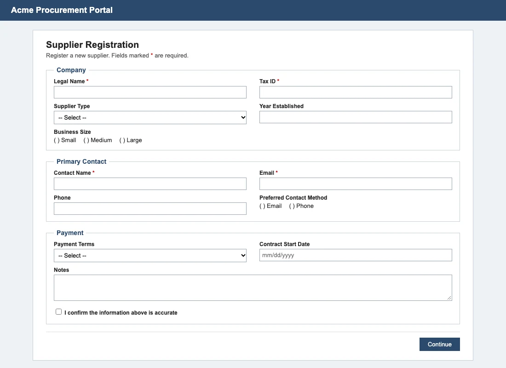
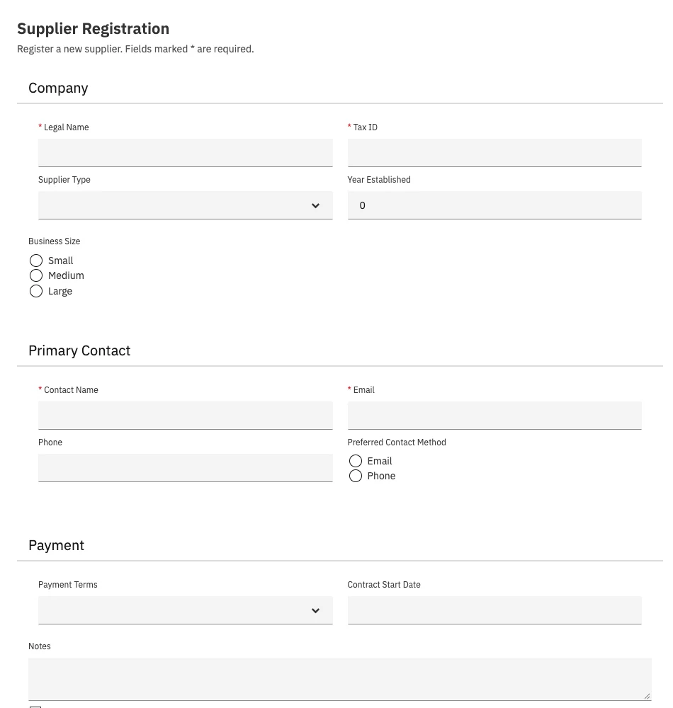
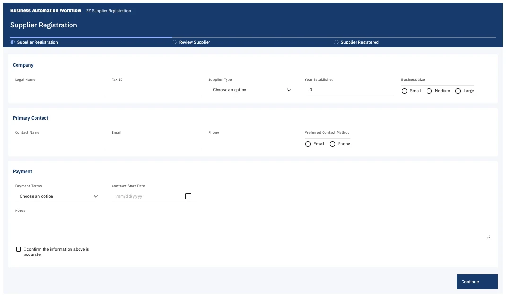
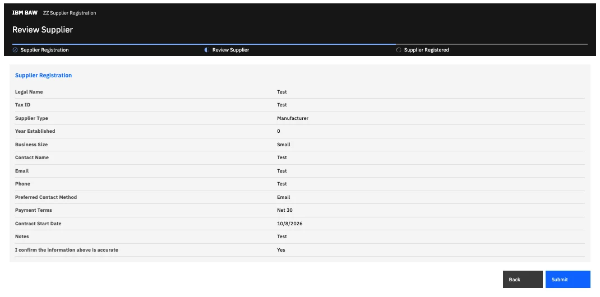

IBM Bob × BAW Dev Tools MCP
Screenshot in. Running BAW app out.
A 15-minute script. Bob turns a picture of an old form into a tested BAW app, then into React + Carbon.



Set the stage before anyone arrives.
Bob designs and writes the specs. The MCP server packages, installs, inspects and tests them on BAW.1 3
- 11
- MCP tools
- 2
- Bob modes
- 5
- skills
- 0
- lines of XML by hand
- Fill
.envwithBAW_URL,BAW_USERand a password or API key. Keep it off screen. - Open the repo in Bob. The MCP panel shows baw-dev-tools with 13 tools.
- Rehearse one build and install, so you know the server accepts the app and how long an install takes.
- Switch to BAW App Builder mode. Enlarge the font. Open the sample screenshot.
- Keep the rehearsal app as a backup. There is no delete tool, so clean up afterwards.
01:00 07:00
Act 1. A screenshot becomes a running app.
Build a ZZ app whose screen looks like screenshots/example-supplier-registration.png. Install it, test it and compare the result with the screenshot.Do Open the sample screenshot. Point at the three boxes, two columns, dropdowns, radio groups and red stars.
Bob does Nothing yet. Let the room look at the old form.
“This form lives in an old portal. All we have is a picture of it.”
Do Paste the prompt in BAW App Builder mode and press Enter.
Bob does Picks the screenshot-to-app skill and plans the steps.
“One sentence. No spec, no Process Designer, no XML.”
Do Open the app spec in work/ as soon as Bob writes it.
Bob does view_image, then a JSON spec: sections, columns, field types, options, required flags.
“Bob reads the picture like a developer: which box is a section, which control is a dropdown, which fields are required.”
Do Approve create_app, then install_app.
Bob does The server packages a TWX from the spec and installs it as a new ZZ app.
“Bob never writes BAW XML. And nothing lands on the server until a person says yes.”
Do Show the test report as it comes back.
Bob does test_service runs the service in a headless browser and screenshots every coach.
“A real browser, on the real server, pressing the real buttons.”
Do Put the original and the built coach side by side.
Bob does Compares both images, fixes the spec and rebuilds if anything differs, then lists its assumptions.
“It checks its own work, and tells us what it guessed, like options hidden in a closed dropdown.”
07:00 12:00
Act 2. Same app, React + Carbon UI.
- Inspect
inspect_coachesturns every coach into a spec: fields in reading order, options, required flags. - ApproveBob improves labels and validation, then stops and waits for you.
- WriteOne React screen per coach.
build_screensuntil it compiles. - ModernizeTwo new services, brand and Carbon themes, in a new snapshot.4
- TestTypes, picks options, presses every button, in both themes.
Give the app you just built a React + Carbon UI. Inspect its coaches, improve the coach spec and show me before you build.Approved. Write a React screen for each coach, then modernize, install and test both themes.“The old coach flow, scripts and buttons keep running underneath. React only replaces what people see.”

12:00 15:00
Guardrails, and the questions you will get.
| Installs only into ZZ apps | Demo work can never touch a real app. |
|---|---|
| Every install is a new snapshot | Reusing a name makes BAW silently keep the old content. |
| No delete tool | The agent cannot remove anything. |
| Credentials stay in the server | Bob never sees a password or a token. |
| A person approves every change | Bob asks before create, modernize and install, and edits only its own folders.2 |
Does Bob write BAW XML?
No. It writes JSON specs and React files. The server generates the TWX.
What can it not build from a screenshot yet?
Tables, file uploads, links and extra buttons. Bob lists them and offers to add them in a React screen.
Does it work with our existing apps?
Read-only, yes. export_app and inspect_coaches turn any app into a coach spec. Output installs only into ZZ copies.
Can other agents use it?
Yes. It is a standard stdio MCP server, so any MCP client can call the same 13 tools.1
What happens when something fails?
Errors come back as plain messages, such as a failed login or a compiler error with file and line. Bob fixes the input and retries.
| MCP panel shows 0 tools | Restart baw-dev-tools in Bob's MCP panel. |
|---|---|
| “Login to BAW_URL failed” | Check .env off screen. Switch to the rehearsal app meanwhile. |
| “Snapshot already exists” | Let Bob bump the snapshot. That is the guard working. |
| “stuck … fields need attention” | Validation blocked a press. Bob adds example values. |
| A slow install | Walk the room through the architecture diagram while it runs. |
15:00
Bring your own screenshot.
A picture became a tested BAW app, then a React + Carbon app. A person approved every change to the server.
Build a small ZZ app for an office supply request: one step with requester name, item, quantity and needed-by date, then a review screen. Install it and test it.